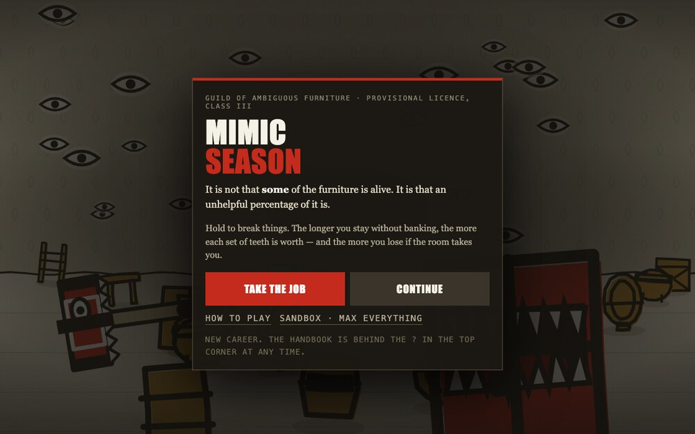

What it is
You are a Mimicologist, third class, licensed by the Guild of Ambiguous Furniture. An unhelpful percentage of the furniture in this dungeon is alive. You are paid per set of teeth recovered. Hold your hammer on things until they break; about one in five turns out to have a mouth.
It is built on one inversion, and the whole game hangs off it:
In every other game of this shape the monster interrupts you. Here the boring outcome is a chair.
How it plays
- One input, three jobs. Hold anywhere. The hammer swings and follows your cursor, so you sweep the clutter without letting go. How long your finger stays down sets your income, your danger and the length of your session at the same time. There is nothing to configure.
- The scream. On the swing that would break an object, roughly one in five reveals a mimic instead: six frames of hard freeze, the press changes ink, and teeth unfold along the seam that was always there. There is never a tell. Nothing glints, no spot on the floor is luckier — the instant you could spot one on sight, every object would stop being worth hitting.
- The fuse. A revealed mimic runs for the door on a visible countdown, eased so that it creeps and then bolts, arriving exactly as the bar empties. Let it reach the door and it leaves with your entire haul.
- The eyes. Fifteen eyes in the wallpaper open while your finger is down, and every open eye shortens the fuse by 4%. That is the entire risk system: the thing you are already staring at is the thing making you unsafe. They close again the moment you let go.
- The room screams too. Fill all fifteen eyes and the room itself turns: jaws close, a seven-second fuse, and every swing anywhere damages it, so all your automation piles in at once. Break it for about fourteen mimics' worth of teeth. Fail and it eats you.
- Bank, or don't. Every set of teeth you take without banking makes the next worth more, up to four times over — and that bonus only exists while the teeth are still in your pocket. Walking out banks everything and resets it. Stay in while it compounds; leave before it is taken.

What you build
- Eight rooms, each with its own ink, its own clutter and exactly one new rule — swarms, books with random effects, mimics that bite back, mimics that are edible, watchers that open the eyes faster, a four-hundred-year-old throne, and finally Outside, printed in no ink at all. You cannot fail a room; being eaten costs teeth, never progress.
- Fourteen tech branches whose keystones change a rule rather than a percentage: swings splash, every eighth swing doubles, frenzy bleeds half as fast, mimics stop running for the door.
- Eight hammers, each a distinct silhouette rather than a recolour — plain mallet, banded iron, a chisel wedge, a grown organic one, one with teeth along the striking edge, and at the top one with teeth and an eye.
- Fangs. Every mimic variant drops its own. One socket per hammer tier, and three of the same fang doubles its effect — so what you socket is your build. Sockets render as teeth on the hammer head, which means your hammer visibly grows a mouth as you go.
- Automation — squires with their own hammers, a lens that drops beams from the ceiling, ordnance that detonates and chains. None of it can raise the danger bar, so automation is your floor and your own hand on the hammer is your ceiling.
- An idle layer that isn't just slower play. Build decoys out of splinters and leave them in the dungeon overnight. Things move in. It is the only source of larvae, which active play cannot produce at all.
- Promotion. Clear all eight rooms and Walk Out becomes Accept Promotion. The dungeon closes its mouth, digests you, and you wake one rank higher inside a bigger one.
How it looks
A print shop that has lost control of its inventory. Two ink plates on rag paper — a black plate for every outline, one spot colour filling every panel, slightly misregistered. Nothing rendered, shaded or lit, and seven colours in the entire game.
- Vermilion is reserved for teeth, tongues and damage. Nothing else, ever.
- Every object has a hinge seam — the chest, the bookshelf, the sack, the bucket. It carries no information, which is exactly why it works.
- Mimics have no eyes, only mouths. The wallpaper has the eyes, so an open eye reads as pure threat with no explanation attached.
- Damage is drawn, not metered — cracks cut into the ink plate, no health bars anywhere.
- Woodcut wobble. Every line runs through a per-instance displacement seed, so no two printings of the same object match.
Where it stands
Systems complete and playable end to end. Not balanced yet — the first promotion currently arrives in about thirteen minutes against a forty-five-to-sixty-minute target, and the top of the tree is unreachable. The numbers are the next job.
One HTML file, shippable as it stands: canvas 2D for rendering, WebAudio
synthesised at runtime for sound, localStorage for saves. No
build step, no CDN, no web fonts, no libraries, no network requests at all.